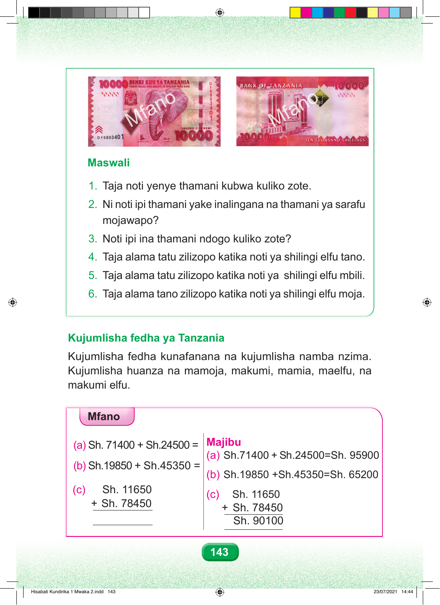

o o n n a a f f M M Maswali 1. Taja noti yenye thamani kubwa kuliko zote. 2. Ni noti ipi thamani yake inalingana na thamani ya sarafu mojawapo? 3. Noti ipi ina thamani ndogo kuliko zote? 4. Taja alama tatu zilizopo katika noti ya shilingi elfu tano. 5. Taja alama tatu zilizopo katika noti ya shilingi elfu mbili. 6. Taja alama tano zilizopo katika noti ya shilingi elfu moja. Kujumlisha fedha ya Tanzania Kujumlisha fedha kunafanana na kujumlisha namba nzima. Kujumlisha huanza na mamoja, makumi, mamia, maelfu, na makumi elfu. Mfano (a) Sh. 71400 + Sh.24500 = Majibu (a) Sh.71400 + Sh.24500=Sh. 95900 (b) Sh.19850 + Sh.45350 = (b) Sh.19850 +Sh.45350=Sh. 65200 (c) Sh. 11650 (c) Sh. 11650 + Sh. 78450 + Sh. 78450 Sh. 90100 143 Hisabati Kundirika 1 Mwaka 2.indd 143 23/07/2021 14:44